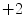
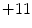

Summarizing the existing findings, the following conclusions can be drawn regarding the past changes in the wind climate:
- There has been an increase in storminess in the latter part of the twentieth century.
- However, the evidence suggests that at least in the NE Atlantic and in the northwest Europe the storminess was at the same level at the end of the nineteenth century as at the end of the twentieth century.
- There seems to have been a poleward shift of storm tracks over the last decades but fluctuations of similar magnitude have occurred earlier in the nineteenth and twentieth centuries.
- There is low confidence that reported long-term increases in tropical cyclone activity are robust, due to, inter alia, the fact that there have been changes in observing capabilities.
- There are many uncertainties in the historical tropical cyclone records and the understanding of the physical mechanisms linking tropical cyclone metrics to climate change is not complete.
The knowledge and confidence in projected future changes of storminess can be summarized as follows:
- There is some confidence that the frequency of the most intense storms will increase but not in all ocean basins.
- There are indications that tracks of extra-tropical cyclones will move poleward as a result of anthropogenic forcing.
- The extreme storminess seen over a hemisphere or for the north Atlantic and north Pacific in general show no significant signs of change in a warmer climate.
- There will be regional differences of the change in extreme storminess and wind speeds.
- Some regional studies indicate increased storminess over the northeast Atlantic and the North Sea regions but with different magnitude.
- There is low confidence in projected changes in location and tracks as well as duration, and areas of impact of tropical cyclones.
- The global frequency of tropical cyclones are likely to either decrease or remain essentially unchanged.
- The mean tropical cyclone maximum wind speed is likely to increase somewhat ( to  %) on a global scale but increases may not occur in all tropical regions.
For wave conditions the knowledge of past changes may be summarized as follows:
- There seems to have been an increase in significant wave height from the middle of the twentieth century to the early twenty-first century in the northern hemisphere winter in high latitudes in the north Atlantic and the north Pacific, with a decrease in more southerly latitudes of the northern hemisphere.
- If the record is extended back to late nineteenth century the picture changes, studies show that storminess and wave heights in late nineteenth/early twentieth century were about the same as near the end of the twentieth century.
- Even though some studies argue that the observed changes in wave conditions during the last part of the twentieth century are manifestations of climate change, it is still uncertain to what extent a climate change signal is detectable in the extreme wave heights.
It is uncertain to what extent future climate change will impact the extreme sea states that will be encountered by ocean going vessels. The reviewed studies show that:
- There will be regional increases in the sea states, more pronounced for extreme wind speed and SWH than for their means; e.g. the North and Norwegian Seas, immediately west of the British Isles, off the northwest of Africa, around 30oN from the east coast of the United states to 50oW and in the Pacific between 25 and 40oN and from the west coast of the United States to 170oW.
- The increases in extremes, represented by the 20-year return period of SWH or the highest storms in 20–30 years intervals are generally in the range 0.5–1.0 m in the North Atlantic, but larger increases can also be read off some graphs in the reviewed papers. Thus the increase may reach 10–18 % of the present 99th percentile Hs in the southern North Sea.
The differences between the projected changes in extreme sea states from studies using various global climate models, different climate forcing scenarios and a variety of downscaling approaches appear to be of the same order as the projected changes. Thus there are relatively large uncertainties associated with projected extreme under different climate, or emission scenarios. Our confidence in the projections is, therefore, limited.
Shortcomings of the reviewed publications include:
- Only a limited number of the factors that influence the projections has been studied simultaneously, e.g. global climate models versus climate forcing and statistical versus dynamical downscaling.
- The full effect of climate forcing scenarios has not been investigated, as emission scenarios with lowest and highest CO2 emissions are not included in the reviewed literature.
- Focus has been on mean values and too low percentiles with only a few studies really considering extremes that are used in shipping, offshore and coastal design.
- The impact of choice of wave models has not been investigated sufficiently.
- The impact of choice of extreme value methods has not been investigated sufficiently.
- The reviewed studies have not been conducted with viewpoint of assisting the designer.
We recommend that international wave scientists and design engineers, offshore, coastal as well as ship, initiate a project that remedies these shortcomings.